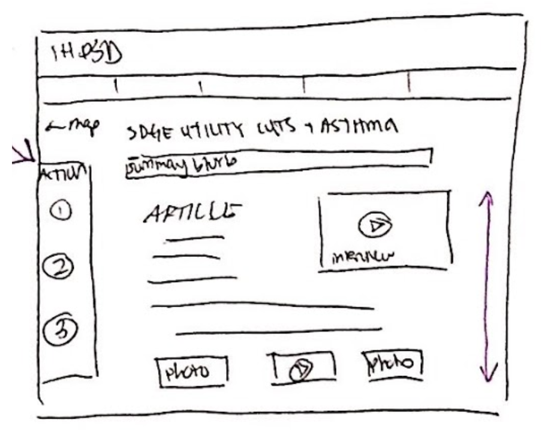
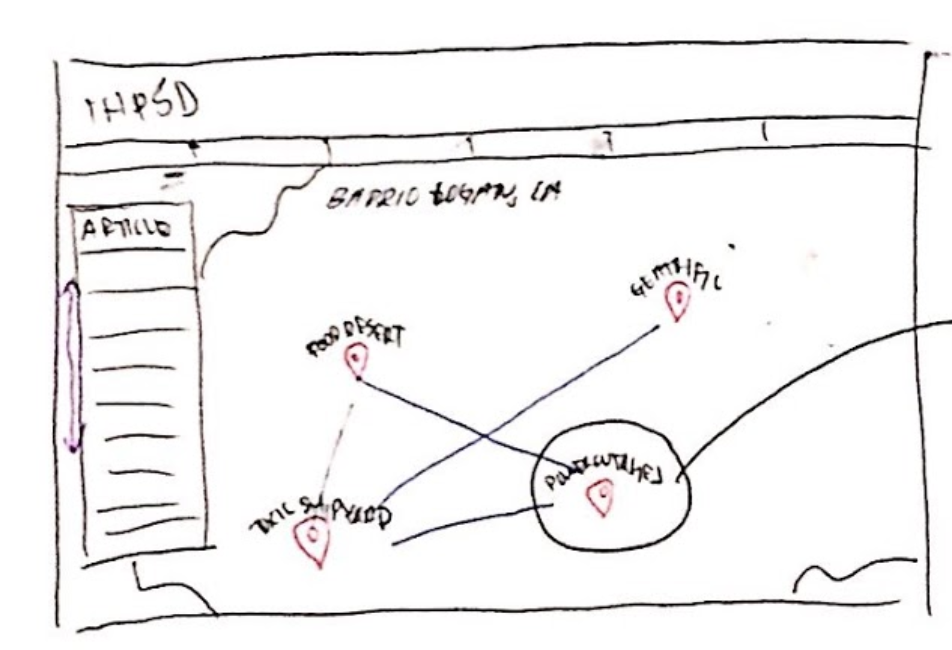
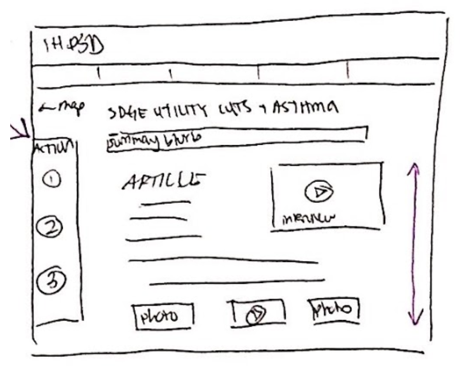
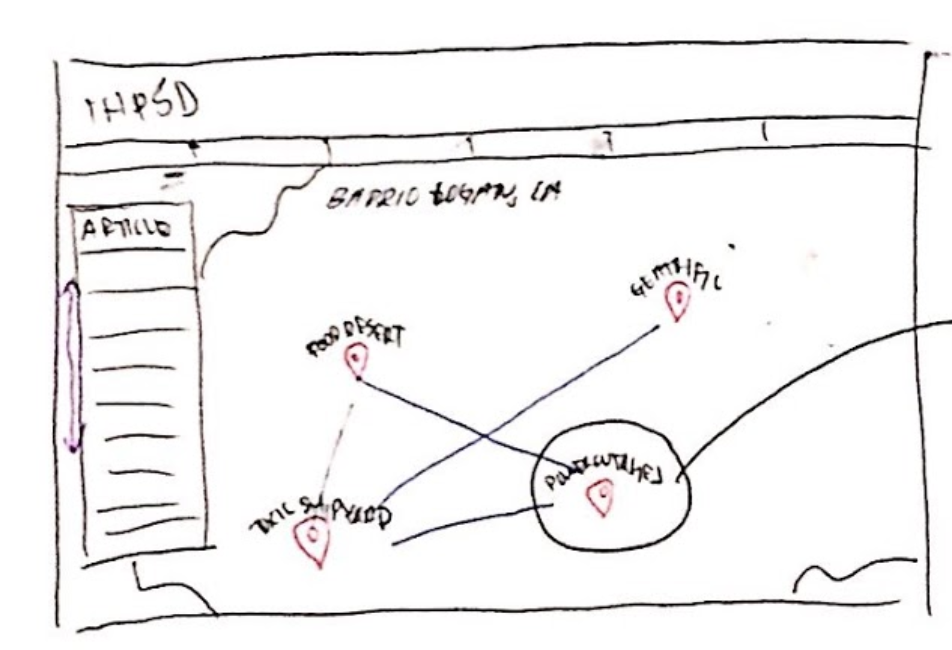

Ideation
Anika brought in sketches of what she wanted the homepage and article page as well as the color scheme she wanted, and we based our own sketches of the information she gave us. 



Our sketches based off Anika's:
Given the limited time, we did not expect to implement every potential interactive feature of the website, such as an interactive spatial map that our client requested. Because of budget and time constraint, the team came to the conclusion that implementing the interactive map was not feasible in the timeframe, which we explained to Anika. Instead, we would focus on designing and creating the homepage and article page.
Using a feedback capture grid for all the concepts and a Pugh chart for the homepage and article page, my team and I were able to select our concept for each page. While we decided not to implement the interactive map, my team and I still decided to include the map in our design process for future updates.
Design
- Homepage
- It will contain an image gallery, featured articles, links to their social media, and IHPSD announcements.
- Interactive Map
- This is a visual way to access information. There will be a map of San Diego with ticks at locations where there are issues. However, our team is not focused on implementing the interactive map for this project.
- Article Page
- This is a traditional article layout of the same information as the map. There will be multimedia embedded within the article to provide a fluid flow when exploring the article.